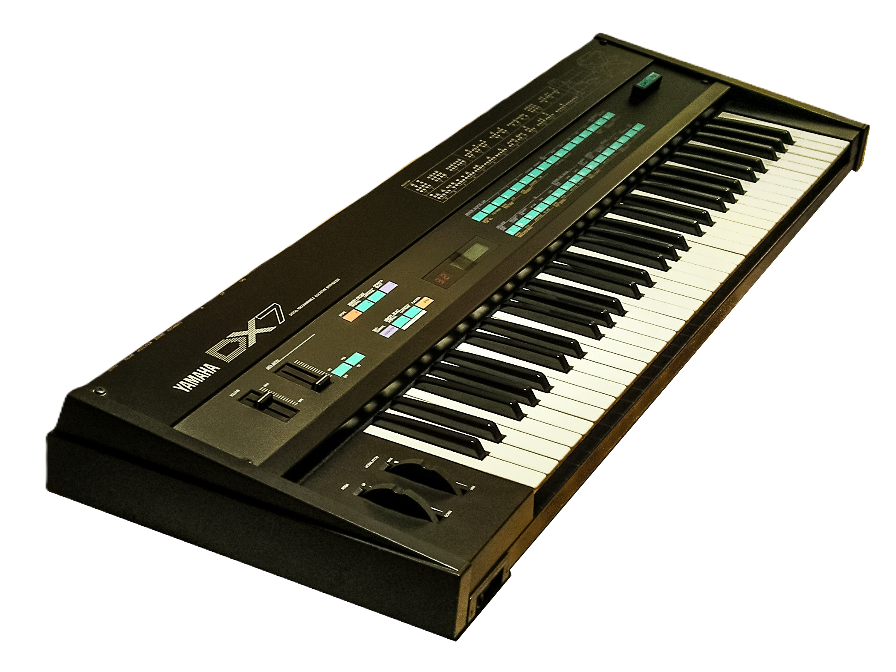
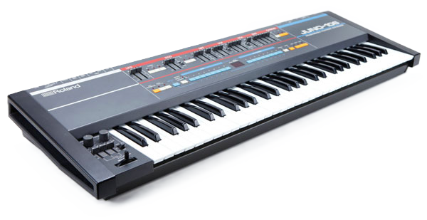
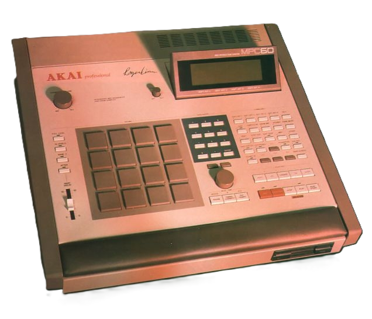
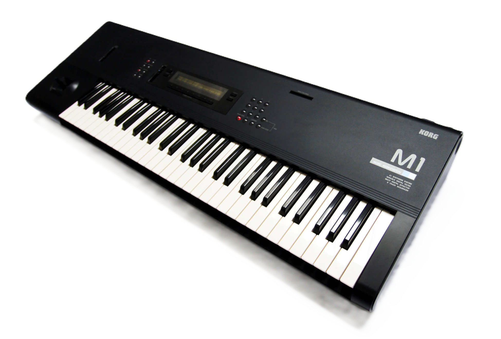
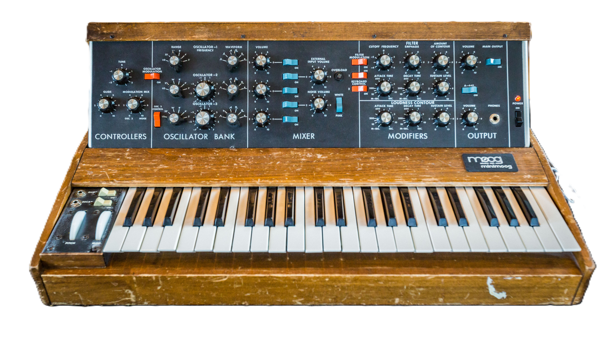
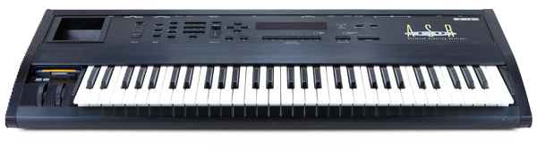

Vintage 80s & 90s Synth Hardware
On majority of the tracks I make in FL Studio, you'll hear the influence of these specific boards. This is my dream collection of the hardware that built 80s and 90s R&B and New Jack Swing. I use VSTs and plugins to get these sounds today, but these are the actual physical synths and samplers that laid the foundation for the music I grew up on and still produce.

Yamaha DX7
FM Synthesizer | 1983 | Yamaha
The DX7 is basically the holy grail for 80s and 90s slow jams. Whenever I need that glassy, digital electric piano or a classic bell tone for a ballad, I'm reaching for a DX7 emulator. It just gives tracks this perfect shimmer that you instantly recognize from the radio back in the day.

Roland Juno-106
Analog Poly Synth | 1984 | Roland
I use minor 9th chords all the time, and nothing makes them sound wider than a Juno-106. The built-in chorus effect on this thing is legendary. It’s perfect for dialing in those wide, silky R&B pads or a thick bassline that sits right in the pocket.

Akai MPC60
12-Bit Drum Sampler | 1988 | Akai
You can't talk about 90s beats without the MPC60. Roger Linn gave this 12-bit sampler a specific swing that just feels human. When I'm trying to get that classic New Jack Swing bounce to my drums, this is the exact groove and grit I'm trying to replicate.

Korg M1
Digital Workstation | 1988 | Korg
The M1 was everywhere in the late 80s and 90s. It was a full workstation, but honestly, the organ and piano presets are what stuck around. If you hear a classic 90s house or R&B crossover track, there's a 99% chance you're hearing an M1 organ.

Minimoog Model D
Analog Mono Synth | 1970 | Moog
Yes, I know it's from the 70s, but the Minimoog is essential for 90s R&B and funk. When I'm creating a heavy sub-bass or tweaking a high-pitched gliding sine lead, the Model D's three-oscillator setup is the exact blueprint I'm following to get that thick analog warmth.

Ensoniq ASR-10
16-Bit Sampling Keyboard | 1992 | Ensoniq
Timbaland and a ton of other 90s producers used the ASR-10 for a reason. It's a 16-bit sampler, but it has this incredible warmth to it. The onboard effects and the way it lets you chop up samples gives drum loops and textures a really soulful, gritty edge.